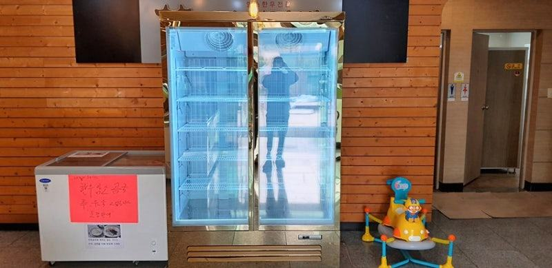
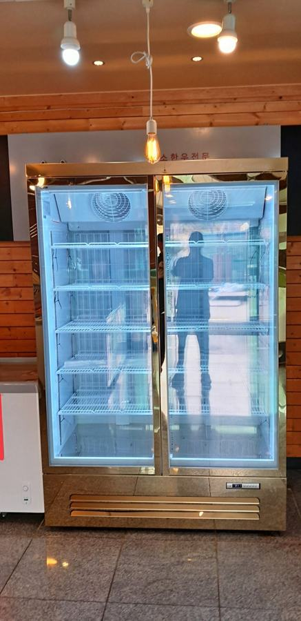
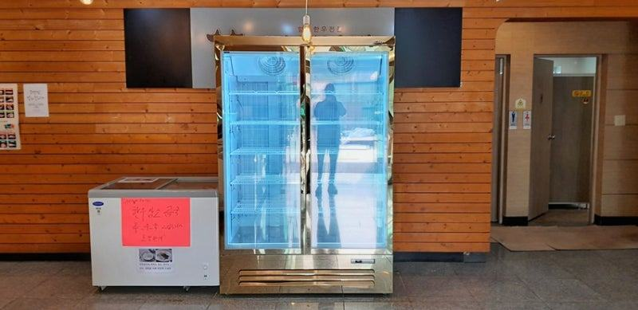
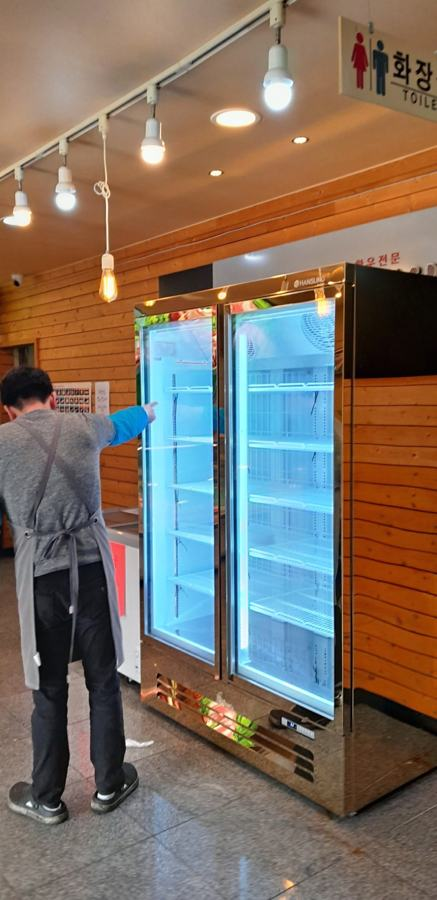
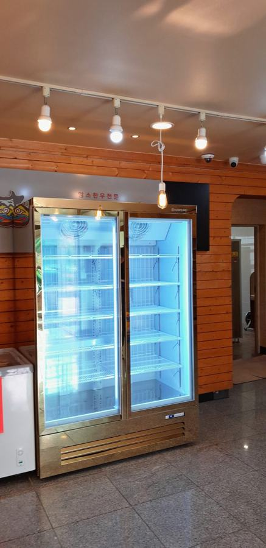
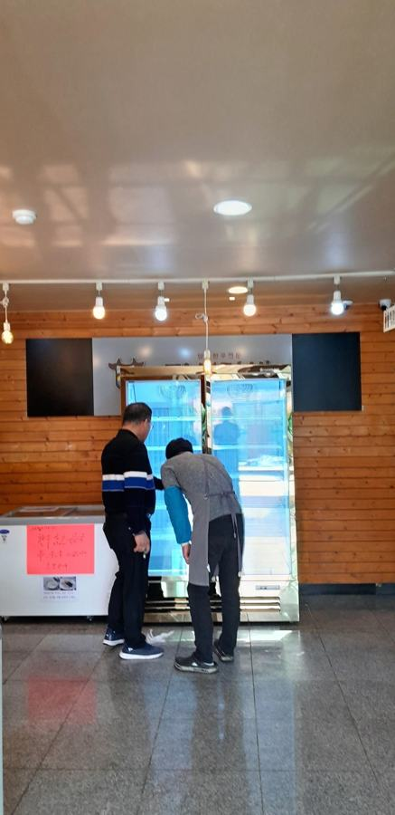

정육쇼케이스
정육쇼케이스 냉동겸용, 한 대로 냉장·냉동을 나눌 때 확인할 것

정육쇼케이스 냉동겸용은 공간이 좁아 생고기와 냉동육을 한 대로 진열하려는 매장에 맞지만, 냉장 칸과 냉동 칸이 서로 영향을 주지 않도록 구획과 단열, 독립된 온도 제어가 되는지 꼭 확인해야 합니다. 냉동 칸은 성에와 결로가 많이 생기므로 유리 사양과 제상 방식, 냉각 능력에 여유가 있는지도 함께 보셔야 합니다.
안녕하세요. 정육점과 고기 전문 매장의 쇼케이스와 냉동고를 매장 구조에 맞춰 만드는 한성쇼케이스입니다.
정육점을 준비하시다 보면 생고기를 보여 줄 냉장 쇼케이스와 냉동 삼겹살, 양념육, 사골을 둘 냉동 쇼케이스를 따로 놓을 자리가 부족한 경우가 많습니다.
그래서 "한 대로 냉장, 냉동 다 할 수 없을까요?" 하는 문의를 자주 받습니다.
냉동겸용 구성은 분명 공간을 아끼는 방법입니다. 다만 냉장과 냉동은 온도 차가 큰 만큼, 한 몸체 안에 넣으면 생기는 문제도 있습니다.
냉동 칸 옆 냉장 고기가 얼거나, 경계 부분 유리에 성에가 끼는 식이죠.
오늘은 정육쇼케이스를 냉동겸용으로 쓸 때 구조별 차이와, 주문 전에 확인해야 할 사항을 정리해 드리겠습니다.
1. 냉동겸용의 두 가지 방식
첫째는 한 대 안을 냉장 칸과 냉동 칸으로 나누는 구획형입니다. 왼쪽은 생고기, 오른쪽은 냉동육처럼 나눠 진열할 수 있어 손님이 한 자리에서 비교하며 고르기 좋습니다.
둘째는 칸 전체의 온도를 계절이나 상품에 따라 바꿔 쓰는 전환형입니다. 명절처럼 냉동 선물세트를 많이 진열할 때는 냉동으로, 평소엔 냉장으로 쓰는 식입니다.
매장 운영 방식에 따라 어느 쪽이 맞는지가 달라집니다.
2. 구획형이라면 단열과 독립 제어
냉장 칸과 냉동 칸 사이 칸막이가 얇으면 냉동 칸 냉기가 넘어와 옆 냉장 고기가 살짝 얼거나 색이 변합니다.
칸막이 단열과, 칸마다 온도를 따로 조절할 수 있는 디지털 온도 컨트롤러가 있는지 확인하세요.
냉기 순환도 칸마다 고르게 돌아야 합니다. 경계 부분만 유독 차갑거나 따뜻하면 그 자리에 둔 고기 상태가 먼저 무너집니다.
문도 칸별로 나뉘어 있어야 냉장 쪽을 열 때 냉동 쪽 냉기가 빠지지 않습니다.
구획 위치도 매장 동선에 맞춰 정하세요. 손님이 들어오는 쪽에 생고기 냉장 칸을 두어 색을 먼저 보여 주고, 계산대 쪽에 냉동 칸을 두면 마지막에 냉동육을 함께 담아 가기 좋습니다.
냉동 칸을 뒷문 작업 공간 가까이 두면 보충할 때 냉동고와 오가는 거리도 짧아집니다.
- 칸막이 단열 구조를 확인하세요.
- 칸별 독립 온도 조절이 되는지 보세요.
- 문이 칸별로 나뉘는지 확인하세요.


3. 냉동 칸의 성에와 결로
냉동 칸은 바깥 공기와 온도 차가 커서 유리에 결로가 생기기 쉽고, 문을 열 때마다 들어온 습기가 성에로 쌓입니다.
손님이 고기를 볼 수 없을 만큼 유리가 흐려지면 진열의 의미가 없어지니 결로 방지 유리 사양을 꼭 확인하세요.
제상 방식도 중요합니다. 성에를 사람이 직접 떼야 하는 구조라면 영업 중에 고기를 옮겨야 하는 번거로움이 생깁니다.
정육점은 손질 중 물과 핏물이 많아 매장 습도가 높은 편이라 더 신경 써야 합니다.
4. 냉각 능력과 소음
냉장과 냉동을 함께 감당하려면 콤프레셔에 여유가 있어야 합니다. 여름철에 냉동 칸 온도가 흔들리면 냉동육 표면이 녹았다 다시 얼면서 품질이 떨어집니다.
어떤 콤프레셔가 들어가는지 견적서에서 확인해 보세요. 한성쇼케이스는 유럽제와 삼성 냉각 콤프를 사용합니다.
고기를 굽는 정육식당이라면 홀 손님 가까이 놓이는 경우가 많아 소음과 발열도 따져 봐야 합니다.
체크리스트
- 구획형인지 전환형인지
- 칸막이 단열과 칸별 온도 제어
- 칸별 문 분리
- 냉동 칸 결로 방지 유리
- 제상 방식
- 콤프레셔 종류와 소음
현장에서 자주 보는 경우: 고기 맛이 들쭉날쭉하다는 말을 들을 때
"지난번엔 괜찮더니 오늘은 질기네", "냄새가 좀 나는 것 같아요" 같은 단골 손님의 말이 나오는 고기 매장에 가 보면, 대부분 고기 자체보다 보관 장비가 원인입니다.
칸마다 온도가 다르거나, 결로로 위생 관리가 어렵거나, 온도 조절이 세밀하지 않은 경우가 많습니다.
그래서 고기 전문점, 정육식당에는 디지털 온도 컨트롤러로 고기에 맞는 온도를 유지하고, 냉기를 고르게 돌려 칸마다 같은 온도를 지키며, 결로 방지 기능을 갖춘 전용 냉동 장비를 권해 드립니다.
매장 인테리어에 맞춰 LED 조명과 외관까지 맞춤으로 제작합니다.






자주 묻는 질문
냉동겸용 한 대와 냉장·냉동 두 대 중 어느 쪽이 나을까요?
공간이 충분하다면 두 대로 나누는 편이 온도 관리가 쉽습니다. 자리가 부족하거나 손님이 한곳에서 비교하며 고르게 하고 싶다면 구획형 냉동겸용이 맞습니다.
냉장 칸과 냉동 칸 비율을 정할 수 있나요?
맞춤 제작이라면 판매 비중에 맞춰 칸 비율을 정할 수 있습니다. 생고기와 냉동육의 하루 판매량을 알려 주시면 구성을 함께 잡아 드립니다.
고장이 나면 냉장·냉동이 한꺼번에 멈추나요?
구조에 따라 다릅니다. 칸별 냉각이 분리된 구조라면 한쪽만 영향을 받을 수 있으니 상담 때 확인해 보시고, 고장 시에는 전국 240여 개 A/S 센터로 접수하시면 됩니다.
매장 조건에 맞춰 만드는 한성쇼케이스
원하시는 제품 사진과 설치할 공간 사진만 보내 주셔도 매장에 맞는 구성을 추천해 드립니다.
- 전국 240여 개 A/S 전담 센터 운영
- 본사 대량 자재 매입으로 품질 대비 합리적인 가격
- 유럽제·삼성 냉각 콤프레셔 적용
- 국내 최초 쇼케이스 전문 디자이너 상주
매장 폭과 원하는 진열 구성을 알려 주세요. 실측과 견적을 안내해 드립니다.
031-986-2458